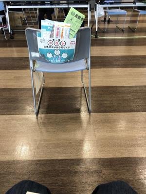
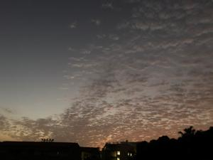

うるがいの話 ある日
最新: バクシン【うるがいの話 ある日】とは 一日だけのプログです
『うるがいの話』の最新一日だけのプログで、通信料が少なく経済的だ。カニの画像をクリックすると全ての日付が載る『うるがいの話』サイトを表示します
|
|
【うるがいの話】 うるがい(ｳﾙｶﾞｲ urugai)とは、『もずくがに』の名前でとても大きくなります。 |
|---|---|
|
|
【カミマヤーの話】 猫のことを方言でマヤーといいます。カミマヤー（kamimayaa）とは、神の猫のことです。 |
|
【たながぁの音楽】 たながぁ（ﾀﾅｶﾞｰtanagaa）とは手長えびのことで、何種類かあり大きいのは車 エビぐらいになります。 |

|
【ぶながぁの話】 ぶながー(bunagaa)とは、赤い髪の毛、赤い身体、そして身長は１ｍ２０ｃｍ ぐらい、川の蟹を食べているの目撃された。場所は沖縄県国頭郡大宜味村のと ある村僕の隣近所に住んでいる爺さんから、聞いた話です。 |
|
|
【ギーマの話】 ギーマ(giima)とは、山原の里山に咲くスズランに似た、 花を付けます。実は食べられます、 気が付くと口の周りが紫になっています。 |
2022年03月03日 (木）バクシン
15:25

２０年も前のこと、英語のヒヤリングを鍛えるためＶＯＡのラジオ放送を聴い
ていると『バクシン』と言う単語が聴こえてきた。「vaccine(バクシン)」
ワクチンのことだった。えー、カタカナ英語の発音ってかなり違うのかと思っ
た。モデルナのワクチンを打った、会場には二人しかおらず、スカスカ、関係
者は１０名以上もいて暇そうにしていた。引き上げるとき、今日ジョキングは
いいですか、と尋ねると汗をかく運動は避けたほうがいいです、歩く程度は問
題ないですと言われた。うん、多分そう言うだろうな。私のジョギングは、歩
くのと大して変わらないので・・・。

１５時２１分 ビットコインの総資産 ￥１４、４３６↓